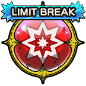

1-2
LIMIT Gauge Cost: 100 (Times usable: 2)
| Ability | ||||||
|---|---|---|---|---|---|---|
| Type | Name | MP | Element | Range | Description | |
|  | Somersault | 109 | |
1-2 |
Deals major Crack-type martial damage (178 base potency) to 1 enemy 2 times, ignores some Light Damage Res, raises user's LIMIT Gauge by 75, and grants the user Awakened Fury for 3 turns LIMIT Gauge Cost: 100 (Times usable: 2) |
|
| Details | ||||
|---|---|---|---|---|
| No. of Attacks | Base Potency | Damage Calc. | Accuracy | Secondary Effect Chance |
| 2 | 178 | [1 + (User's Level/91)] x Base Potency | 100% | 100%: Attack ignores some damage reducing status changes, namely  , ,  , and , and  100: User gains Awakened Fury (3 turns) |